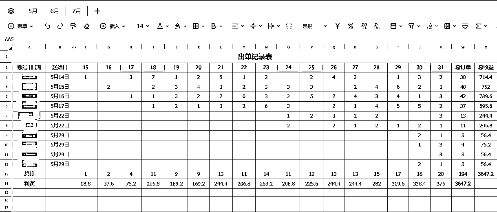

来源：https://md8vbz6pkh.feishu.cn/docx/I2Mxdni5qoMfbrxBvUFcm6I9nfc
大家好，我是纸壳，前段时间写过一篇《一个长期稳定赚钱的项目是如何做出来的》，里面分享了我们团队做项目的方法和思路，最近一段时间，就用这个方法跑出来一个稳定赚钱的项目，今天就理论结合实践，分享一下这个项目从0到10的过程
先说项目，是一个大家都很熟悉的项目“小红书虚拟资料”，目前的数据是，30家店铺对应30个账号，平均单号月利润2400左右，每月增幅50%以上，预计下个月在不增加店铺的情况下，单月整体利润能突破10w。
项目是从5月份开始的，一开始搞了10个店，6月份20店，7月份30店，后面还会继续加店，附几张店铺最新数据截图，运营两个月以上的店数据基本都差不多这样
这篇帖子作为《一个长期稳定赚钱的项目是如何做出来的》的实践对照，会按前篇框架拆解每个环节的操作及背后逻辑，希望能对大家做项目有借鉴意义，建议先看上一篇再来看这篇，两篇搭配看效果更佳
首先回顾一下上一篇的主要内容，做好项目的四个步骤
一、筛选项目
标准：确定性强 、可批量复制 、稳定合规、有门槛
二、充分调研
观测同行、请教同行、多渠道交叉验证
三、测试项目
跑通完整闭环、确认真实成功率
四、放大项目
降难度、做复制、设止损
看完本帖你将收获到
1、小红书虚拟资料杂货铺模式的完整流程
2、新项目从选择到放大的全流程实战经验
3、我个人对于普通人创业的一些经验总结
先说筛选项目，4 月底团队计划拓展新业务，用了20天左右，筛选调研了很多不同的项目，包括：小红书虚拟资料、小红书电商、小红书商单、AI自媒体、AI视频、AI绘画、闲鱼电商、闲鱼虚拟资料、公众号爆文、美团电商、视频号创作者收益等等
其中大部分项目都被筛选的四个标准卡掉了，这四个标准评判主要是根据我们团队的现状和能力，有一定的定制化，比如有的项目对于我们来说无法复制，但是对其他团队可复制
本帖主要以小红书虚拟为案例分享， 其他项目就不过多赘述了
上文中讲到，确定性要通过成功案例和入场时机来判断
从项目难度和成功案例来看，可批量复制是毫无疑问的，尤其是在AI的辅助下，这一点是完全符合要求
从调研的诸多案例中看到，同行对于这个点都很重视，原创笔记原创资料都符合平台规范，而且小红书平台有一个非常好的点，允许修改，违规后可以按提示修改对应内容，修改后会取消处罚，相当友好
关于这个点，一开始认为是没有门槛的，随着做的过程中发现，这个项目还是有一定的门槛，首先谁的号多品多笔记多，谁就赚钱，然后每个号每天发的笔记是有上限的，所以号越多、运营时间越长，竞争优势越明显
如下图，把对多项目的判断具象化，把抽象的选择，变成数学题，能做的尚不能完全判断，但是不能做的已经很明确了
调研方法：观测同行、请教同行、交叉验证
给大家看一下当时调研小红书虚拟资料的一些截图
这个过程中也看了大量的帖子、航海资料等等
在数据观测、同行反馈、还有其他渠道的信息反馈，交叉验证下，判断该项目可以进入测试阶段
回顾一下，测试的核心目的只有两个：跑通完整闭环、确认真实成功率
一种是垂直类（左一），一个账号只做某一类资料，甚至是只做某几个品，比如少儿教育、k12、考公考研等等。所有笔记反复围绕一类产品发布，塑造人设，加强信任，内容质量更高
另一种是杂货铺类（右一），这种账号什么类型的品都发，几乎不存在选品的概念，笔记也是每个品发1篇，账号没有人设，内容质量较低，靠数量堆概率
根据调研的反馈，垂直类账号遇到的问题有很多，比如笔记不爆、竞争度高、不停换内容、不好复制等等
而杂货铺类账号反馈的问题就一个，号不够多
结合我们 "批量复制" 的战略目标，毫无疑问选择了杂货铺模式，直接报名买了个课，报课之后，拿到老师的整套流程迅速搞了起来
这里还是要强调一下，这个阶段完成比完美更重要，不要搞创新，1:1复刻标准答案
项目非常非常简单，这张照片是当时梳理的流程，从注册账号到出单的全部操作基本都囊括在这里面了
首先注册一个淘宝店和小红书店铺，将别人淘宝店的商品搬运到自己的淘宝店，然后授权给小红书店铺，进行上品
上品环节几个要注意的点
确定性强的项目，上手就有清晰体感：要么很快拿到正反馈，要么明确知道问题出在哪
项目正反馈来的很快，第一批上了4个号，基本都是发完笔记第二天就出单，然后陆续加到10个号，反馈都差不多，至此确定跑通闭环，也验证了真实成功率，进入到放大环节

6 月新增 10 个账号后，发现原有人工操作模式存在瓶颈，单人单日操作上限就是8-10个号，单纯加人加号的模式无法支撑规模化增长
按照上一篇放大项目的理论，先降难度再做复制
项目可拆分为三大块：
其中最耗费人力的就是发布工作，每个号每天发30篇，20个号就是600篇，都是批量重复性工作，计划用工作流来代替
然后就是违规笔记的问题，主要就是从淘宝搬的品，会出现其他人也搬过，笔记都用同一张图，涉及非原创的违规，本着不对抗平台的原则，这里决定用原创图，当然图片的制作也是用工作流
其他环节也有一些小问题，但都不是影响放大的问题，这里就不表述了
跟很多工作流大佬交流后，确定用影刀工作流的方案，开始学习影刀，因为之前有编程经验，影刀学起来很快，2天就搭好了一个发笔记的工作流
工作流介入后发现之前的流程是给人设计的，而按照自动化的逻辑很多动作是不必要的，需要对整个流程重新梳理，跳出人的视角，按机器的思维来进行设计
后面1个月的时间没有新增账号，所有时间和精力都用在拆解流程、优化环节、制定标准、搭建工作流
针对这个项目的重复性工作，我们搭建了多个工作流，实现80%的自动化，效果显著，从一个人最多管理8个号，提升到30个号还没到上限
下图是目前已有的部分工作流
至此整个项目流程变成：自动上品--自动抓取数据到数据库--自动生成图片--自动发布，已具备可大批量复制的基础条件
算清投产才投钱，设好止损才放大
放大过程中，最重要的事情就是算好账，目前这个项目投入很低，主要成本
合计每月成本大概在2w左右，我们的止损线设置在连续两个月利润低于成本1.5倍，触发止损后关停投流和非优质账号，以及优化人员，后续观察项目数据决定是否彻底停止
目前的节奏是每月增加10-20个账号，同时投流费用逐步增加，这块之前优先级不高，后续会制定更合理的标准助力账号提效
以上就是关于这个项目从0到10的过程，当然还有大量的细节没法一一描述，但是本文主要想表达的观点是，用科学系统的方法做项目，可以更有效的拿到结果，希望能对大家有帮助
如下图：我们的理念是轻运营，尽量减少人为的干预，就像种地，耕地播种洒水施肥除草，做好必须要做的核心部分，剩下的保持耐心，让它自己长出来，万万不可拔苗助长
用明确标准筛选项目、评估进展，避免凭感觉决策
目前还有两个在跑的项目也都是按这套思路做的，都也不错，暂时先保密，再跑几个月再来分享
尽可能去掉所有非标准化的操作，相同动作放在一起，用流水线模式能解决大部分问题
所有企业、团队、个人都要尽快把AI和工作流加入到业务中！！！
菩萨畏因众生畏果，很多事情能不能做成，从开始就注定了
把功夫下在根上，尊重规律顺应规律
执行力拉满，在能力范围内无限复制，赚1w还是赚10w，拼的只是谁店多谁品多而已
最后想说，所有稳定盈利的项目都不是偶然，而是系统方法 + 执行力的必然结果。希望今天的分享能帮你少走弯路，早日找到自己的盈利项目